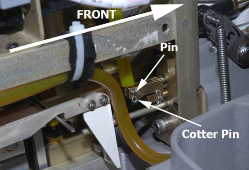
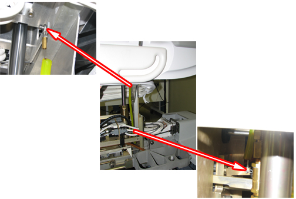

Operating Documentation
Direction 5500113, Rev# 3
Discovery MR450 1.5T Service Methods
Module Version 7.0, Version Date 6/24/10
Operating Documentation |
| Required Persons | Preliminary Reqs | Procedure | Finalization |
|---|---|---|---|
| 1 | Not Applicable | 30 mins |
| Item | Qty | Effectivity | Part# | Manufacturer | |
|---|---|---|---|---|---|
| Non-Magnetic Tool Kit | 1 | - | 5112581 | - | |
| Item | Qty | Effectivity | Part# | Manufacturer | |
|---|---|---|---|---|---|
| Up Limit Cable | 1 | - | Refer to FRU Manual | - | |
| Bracket | 1 | - | Refer to FRU Manual | - | |
Undock Patient Table and remove it from magnet room.
Remove Upper Bellows and Lower Base Side Cover. See Patient Table Upper Bellows and Lower Base Side Cover Removal for more information.
Raise table to maximum height.
| ||||
| PERSONAL INJURY POSSIBILITY! | ||||
| SEVERE PERSONAL INJURY CAN OCCUR IF TABLE IS ACCIDENTALLY LOWERED DURING MAINTENANCE PERFORMANCE. | ||||
| WHEN PERFORMING MAINTENANCE ON THE TABLE IN ITS UP POSITION, ENSURE THAT THE LOCK BAR IS SAFELY IN PLACE. |
Lower the Table Lock Safety Bar.
Lower the table ensuring that all of the table top's weight is resting on the safety bar.
Remove cotter pin and retaining pin securing bottom end of cable to bell crank.
Illustration 1: Pin and Cotter Pin

Remove clamp securing cable to bracket.
Remove retaining ring and washer securing end of cable to Up Limit pin.
Install new cable and attach to Up Limit pin.
Fasten other end of cable to bell crank and secure retaining pin with cotter pin (see Illustration 1).
Replace Up Limit Cable Bracket, if necessary:
Remove the two screws at the top of the bracket that attach it to the hydraulic cylinder.
Replace the bracket using existing hardware.
Attach clamp securing cable to bracket.
Illustration 2: Table Up Limit Cable Replacement

Adjust Table Up Limit cable to provide enough slack so that when the cylinder is fully raised in next step, the cable will not be damaged.
Fully raise the cylinder.
Adjust Table Up Limit cable just enough to remove any slack when hydraulic cylinder is fully extended. Do not overtighten
Replace Upper and Lower Base Covers.
Dock Patient Table and check for proper operation of Up Limit switch.
Verify Table operation using Operator Console.